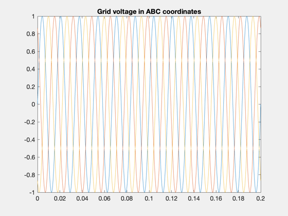
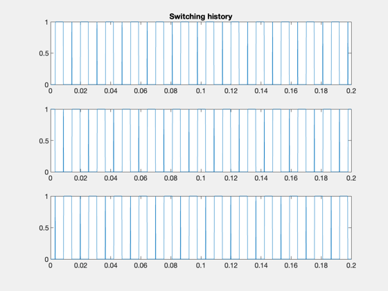
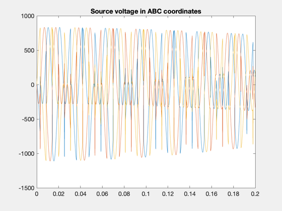
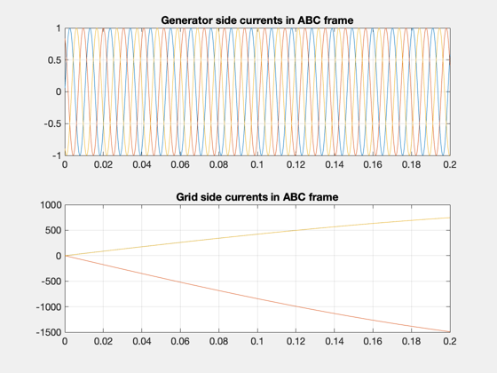

Matrix converter demonstration
This is a demo of a dynamical model of the Matrix Converter presented in the reference below. A matrix converter converts n phases to m phases without a DC link. This simplifies the converter design.
------------------------------------------------------------------------ See also delta, ABC2SRF, MC33Switching, SRF2ABC ------------------------------------------------------------------------
Contents
Reference
Nikkhajoei et al "Dynamic Model of a Matrix Converter for Controller Design and System Studies", IEEE Transactions on Power Delivery, vol. 21, no. 2, April 2006, pp 744-754.
%-------------------------------------------------------------------------- % Copyright (c) 2008 Princeton Satellite Systems, Inc. % All rights reserved. %--------------------------------------------------------------------------
Simulation parameters
%----------------------
d = struct;
d.delT = 1e-4;
simlen = 2000;
Plotting arrays
%----------------
tP = zeros(1,simlen+1);
xP = zeros(6,simlen+1);
vabcsP = zeros(3,simlen+1);
vabciP = zeros(3,simlen+1);
vabcNP = zeros(3,simlen+1);
iabcsP = zeros(3,simlen+1);
iabcnP = zeros(3,simlen+1);
SwP = zeros(3,simlen+1);
Circuit parameters
%-------------------
d.Rn = 0.0167;
d.Ln = 0.0628;
d.Rs = 0.0095;
d.Ls = 0.927;
d.CI = 0.755;
Define Grid/reference voltage
%------------------------------
vNMag = 1;
omegaeN = 60*2*pi;
delta = 0;
d.vref = [vNMag;omegaeN;delta];
t = 0;
Define generator frequency
%---------------------------
d.omegaGE = 600;
Initial Switching matrix
%-------------------------
d.S = [0 1 0;1 0 0;0 0 1];
Compute initial conditions
%---------------------------- iabcs = [sin(d.omegaGE*t);sin(d.omegaGE*t+2*pi/3);sin(d.omegaGE*t+4*pi/3)]; % from generator iabcsdot = d.omegaGE*[cos(d.omegaGE*t);cos(d.omegaGE*t+2*pi/3);cos(d.omegaGE*t+4*pi/3)]; % from generator isalbegas = ABC2SRF(iabcs,d.S); isalbegasdot = ABC2SRF(iabcsdot,d.S); vsalbegas = [0;sqrt(3)/2;-sqrt(3)/2]; vabcs = SRF2ABC(vsalbegas,d.S); d.vsalbega = [0;0;0]; isalbegai = [0;sqrt(3)/2;-sqrt(3)/2]; isalbegaidot = inv(d.S)*isalbegasdot; % only for initializing. In general the equlaity does not hold isalbegaC = isalbegas - isalbegai; iabcn = isalbegai; % The output of MC to the grid vabcN = [d.vref(1)*sin(d.vref(2)*t);d.vref(1)*sin(d.vref(2)*t+2*pi/3);d.vref(1)*sin(d.vref(2)*t+4*pi/3)]; vsalbegai = vsalbegas - d.Rs*isalbegas - d.Ls*d.S*iabcsdot; x = [isalbegai;vsalbegai-d.vsalbega]; vabci = SRF2ABC(vsalbegai,d.S); xP(:,1) = x; vabcsP(:,1) = vabcs; vabciP(:,1) = vabci; iabcsP(:,1) = iabcs; iabcnP(:,1) = iabcn; vabcNP(:,1) = vabcN; SwP(:,1) = d.S(1,:)'; h = waitbar(0,'Running Matrix Converter Demo...');
Simulation loop
%---------------- for i = 1:simlen waitbar(i/simlen) % Control Computation %-------------------- Sm = d.S; d.Sm = Sm; d.S = MC33Switching(vabci,d.vref,t); % Switching Control Sp = d.S; d.Sp = Sp; d.ts = t; d.vsalbega = (Sp*inv(Sm)-eye(3))*vsalbegai; [ts,x] = ode45('MCDynamics',[t t+d.delT],x,[],d); t = ts(length(ts)); x = x(length(ts),:)'; tP(:,i+1) = t; xP(:,i+1) = x; vsalbegai = x(4:6) + d.vsalbega; vabci = SRF2ABC(vsalbegai,d.S); vabciP(:,i+1) = vabci; iabcs = [sin(d.omegaGE*t);sin(d.omegaGE*t+2*pi/3);sin(d.omegaGE*t+4*pi/3)]; isalbegas = ABC2SRF(iabcs,d.S); isalbegai = x(1:3); isalbegaC = isalbegas - isalbegai; iabcsdot = d.omegaGE*[cos(d.omegaGE*t);cos(d.omegaGE*t+2*pi/3);cos(d.omegaGE*t+4*pi/3)]; vsalbegas = vsalbegai + d.Rs*isalbegas + d.Ls*d.S*iabcsdot; vabcsP(:,i+1) = SRF2ABC(vsalbegas,d.S); iabcsP(:,i+1) = iabcs; iabcn = x(1:3); iabcnP(:,i+1) = iabcn; vabcN = [d.vref(1)*sin(d.vref(2)*t);d.vref(1)*sin(d.vref(2)*t+2*pi/3);d.vref(1)*sin(d.vref(2)*t+4*pi/3)]; vabcNP(:,i+1) = vabcN; SwP(:,i+1) = d.S(1,:)'; end close(h)
Plot results
Plot
%------ NewFig('MatConDemo') plot(tP,vabcNP) title('Grid voltage in ABC coordinates') NewFig('MatConDemo') subplot(2,1,1) plot(tP,iabcsP) title('Generator side currents in ABC frame') grid on subplot(2,1,2) plot(tP,iabcnP) title('Grid side currents in ABC frame') grid on NewFig('MatConDemo') subplot(3,1,1),plot(tP,SwP(1,:)) title('Switching history') subplot(3,1,2),plot(tP,SwP(2,:)) subplot(3,1,3),plot(tP,SwP(3,:)) NewFig('MatConDemo') plot(tP,vabcsP),title('Source voltage in ABC coordinates') NewFig('MatConDemo') subplot(2,1,1) plot(tP(2:simlen+1),iabcsP(:,2:simlen+1)); title('Generator side currents in ABC frame') grid on subplot(2,1,2) plot(tP(2:simlen+1),iabcnP(:,2:simlen+1)); title('Grid side currents in ABC frame') grid on %-------------------------------------- % $Id: bcaa147a0eaad980b8cd853d6387cf9ad5f59cc1 $   